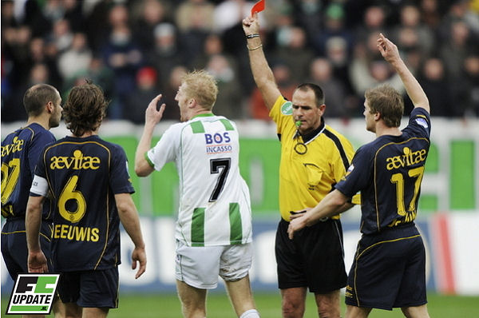

Het moment waarop Meerdink de rode kaart krijgt.
foto: fc update
Roda JC heeft in Euroborg met 1-1 gelijkgespeeld tegen FC Groningen.
Groningen speelde ruim een uur met een man minder na een rode kaart voor
Martijn Meerdink, maar hield toch stand. De ploeg stond op dat moment al op
1-0 door een treffer van Berry Powel. Negen minuten voor tijd scoorde Andres
Oper de gelijkmaker.
De inbreng van scheidsrechter Ruud Bossen was beslissend tijdens dit
enerverende duel. De arbiter gaf na 25 minuten spelen een rode kaart aan
Martijn Meerdink. Later keurde hij op aangeven van zijn assistent nog
onterecht een Roda-treffer van Willem Janssen af.
Roda JC kreeg in de tweede helft meer dan genoeg mogelijkheden om over de
thuisploeg heen te gaan. Maar er werden legio kansen gemist. Willem Janssen
tikte van dichtbij naast en Andres Oper kon net niet profiteren van een
rebound die doelman Brian van Loo weggaf. Even later stond Oper wel op de
goede plaats om de gelijkmaker te scoren.
Foto's vanuit Gronings perspectief
>>>